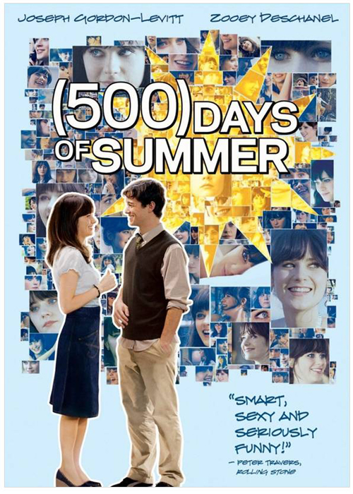

A depressed man (Edward Norton) suffering from insomnia meets a strange soap salesman named Tyler Durden (Brad Pitt)
and soon finds himself living in his squalid house after his perfect apartment is destroyed.
The two bored men form an underground club with strict rules and
fight other men who are fed up with their mundane lives.
Their perfect partnership frays when Marla (Helena Bonham Carter), a fellow support group crasher, attracts Tyler's attention.
2. 500 Days Of Summer

Tom (Joseph Gordon-Levitt), greeting-card writer and hopeless romantic, is caught completely off-guard when his girlfriend, Summer (Zooey Deschanel),
suddensuddenly dumps him.
He reflects on their 500 days together to try to figure out where their love affair went sour, and in doing so,
Tom rediscovers his true passions in life.
3. Grave Of Fireflies
A devastating meditation on the human cost of war, this animated tale follows Seita (Tsutomu Tatsumi),
a teenager charged with the care of his younger sister, Setsuko (Ayano Shiraishi),
after an American firebombing during World War II separates the two children from their parents.
Their tale of survival is as heartbreaking as it is true to life.
The siblings rely completely on each other and struggle against all odds to stay together and stay alive.